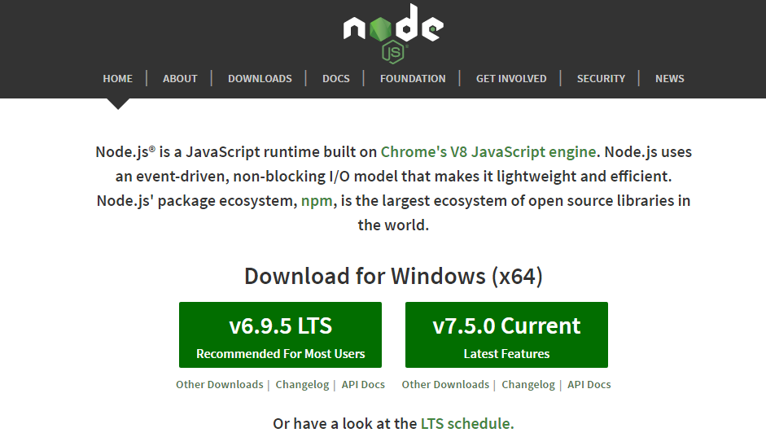
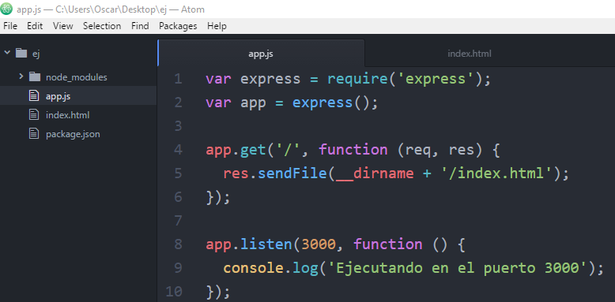
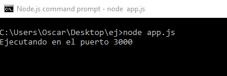
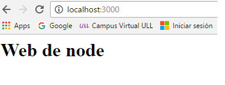

nodeJS
Node.js es una librería y entorno de ejecución de E/S dirigida por eventos y por lo tanto asíncrona que se ejecuta sobre el intérprete de JavaScript creado por Google V8. Nos permite ejecutar javascrip del lado del servidor entre otras cosas.
Para su instalación, en el caso de Windows, podemos descargar el instalador desde la página oficial y seguir el asistente de instalación. 
Para su instalación en el caso de Ubuntu, hay que ejecutar los siguientes comandos:
sudo apt-get update sudo apt-get install nodejs sudo apt-get install npm
Uso básico de nodeJS con Express
Para crear una aplicacion web con nodeJS necesitamos un módulo de node llamado Express. Para ello hay que tener un package.jason que lo crearemos con:
npm init
Luego podemos instalar Express con:
npm install express --save
A continuación, creamos un archivo que contendra el código del servidor. 
En este caso la aplicación enviará el fichero index.html cuando se visite la ruta raiz y el puerto en el que estará será el 3000.
Para ponerlo en funcionamiento basta con:
node app.js

La aplicación estará en http://localhost:3000/ 